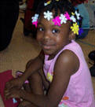

Become a volunteer!
Click here to check out our
current volunteer opportunities!
Our families need someone like you.
Each year, more than 26,000 of our community’s most vulnerable children and
families turn to Family & Children's Service for help. It’s our dream that every
child will grow up in a loving family supported by a caring community. By
volunteering, you can help us make this dream a reality.
Amazing People,
Amazing Stories:
Karen Peterson Works
for Community Change
At Thomson West, Karen Peterson uses
her business skills as FindLaw’s director of strategy and business development.
Outside the business, Karen applies those skills as a board member for Family &
Children’s Service (FCS).
“Nonprofit organizations need people
with backgrounds in finance, marketing and strategy,” says Karen. “Volunteering
on this board is a great way to serve the community.”
Karen has served on the board’s
governance, public policy and philanthropy committees during her tenure at FCS.
Since 2005, she has been the chair of the public policy committee, where she
works with the board and the policy department on promoting FCS’s ability to
advocate effectively on behalf of its clients.
“Karen’s volunteer service gives a
voice to those who are underrepresented in public policy discussions,” says
Mesha Davis, vice president of development at FCS.
Volunteering that fits your lifestyle
Family & Children's Service provides a unique combination of services that
support families, children and our community. Because we have nearly 20
different services and programs, we can:
- find a meaningful way for you to volunteer
- tailor your experience to fit your interests and schedule
- make it fun and rewarding.
Enhance your skills and strengthen your resume.
When you volunteer with Family & Children's Service, you’ll not only feel
good about what you’re doing, you’ll gain valuable knowledge and experience. We
have nearly 100 professional staff who work with our volunteers to ensure your
experience is meaningful. Our volunteers are an important part of our work. For
example:
- Our marketing communications volunteers actually write news releases and
feature stories.
- Our mentors work one-on-one with residents who want to become effective
leaders in their communities.
- Our event volunteers work with staff from beginning to end.
Get started by filling out our:
(You will need
Acrobat Reader
to open the pdf forms.)
For more information on volunteering call 612-341-1611. |